slide to scroll, or press the dots underneath the picture to navigate.
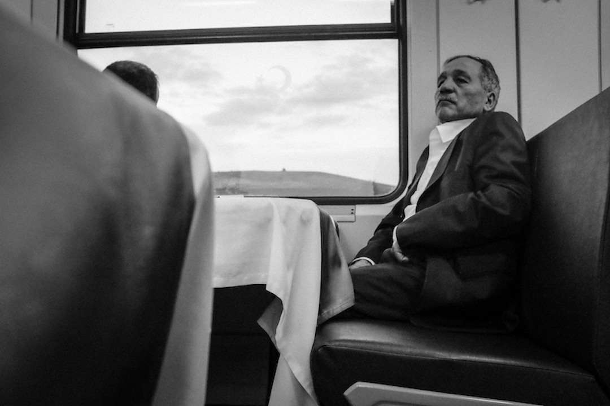
The Orient Express - Anatolian Planes, Turkey, 2015
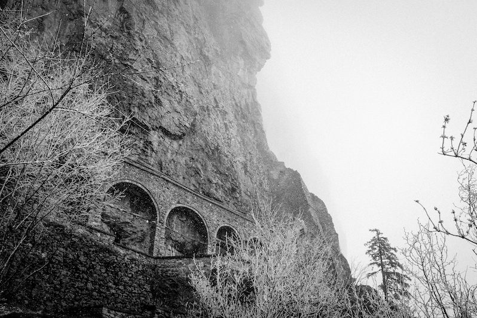
Sumela Monastery - Trabzon, Turkey, 2015

Anahita, Conjuring Gods - Garni, Armenia, 2015
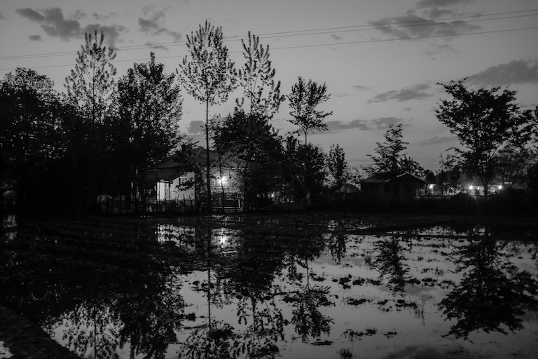
Swampy Dusk - Fuman, Iran, 2015

The Pied Piper - Tehran, Iran, 2015
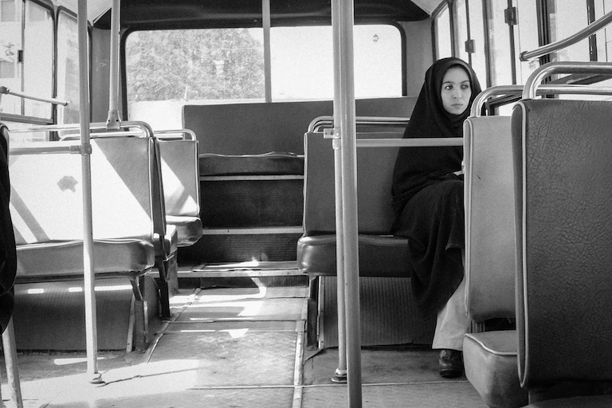
Alone - Tehran, Iran, 2015
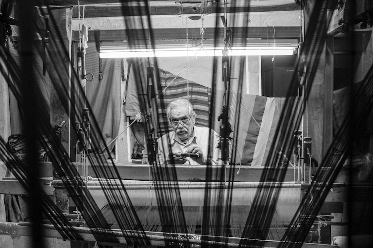
The Tailor of Kashan - Kashan, Iran, 2015
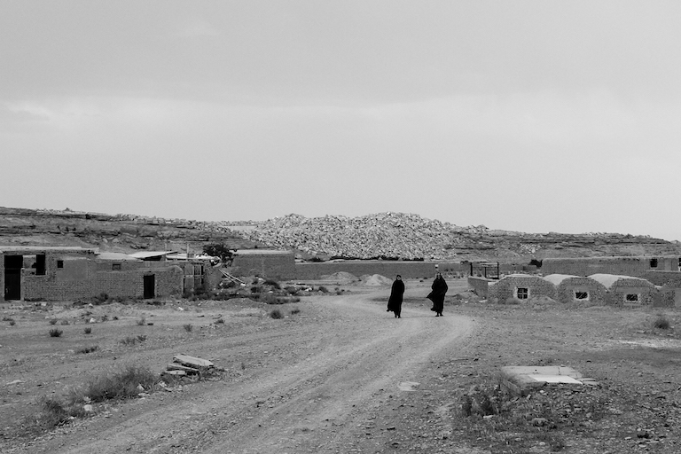
Wasteland - Niasar, Iran, 2015
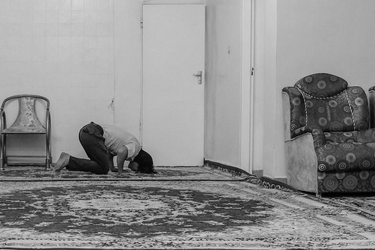
Prayer - Joshegan-E Estark, Iran, 2015
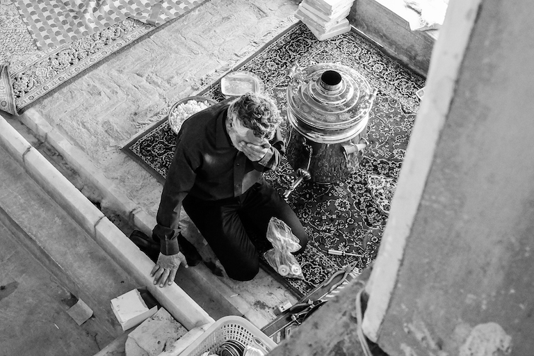
Weight - Yazd, Iran, 2015
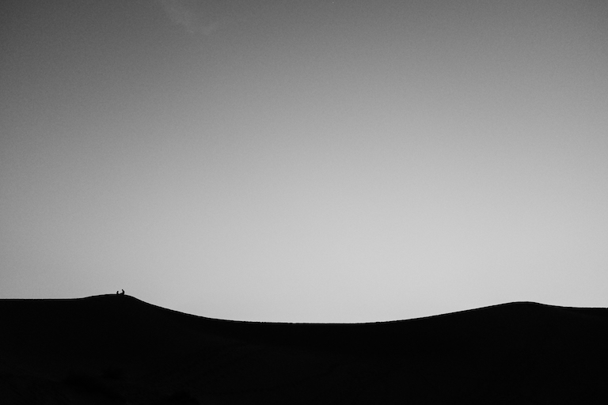
Silhouette - Desert near Yazd, Iran, 2015
In The Mosque - Shiraz, Iran, 2015
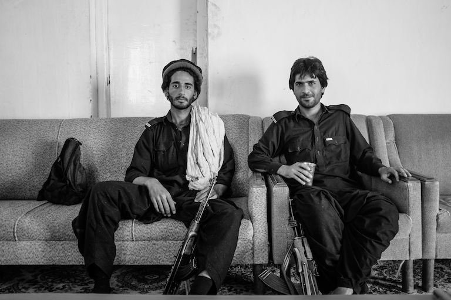
Police Escort - Taftan, Pakistan, 2015
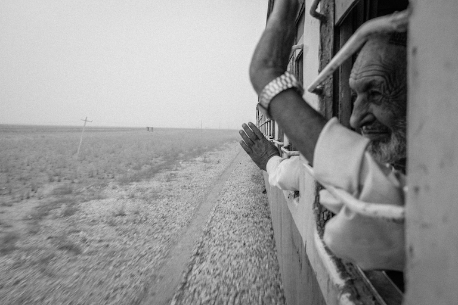
Goodbye - Bolan Mail, Pakistan, 2015
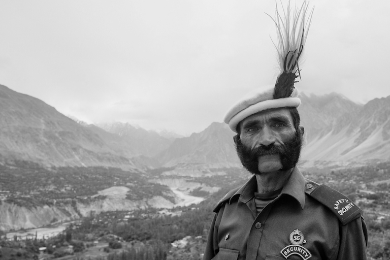
Baltit Fort Royal Guard - Karimabad, Pakistan, 2015

Mountain Child - Fairy Meadows, Pakistan, 2015

Reflection - Lahore, Pakistan, 2015
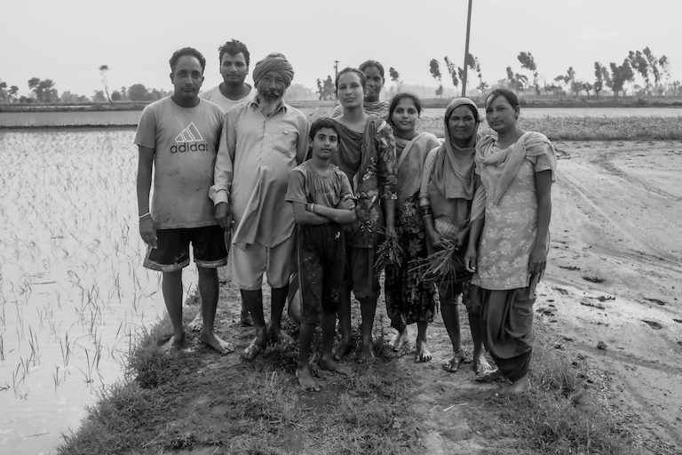
Rice Farmers - Tarn Taran, India, 2015
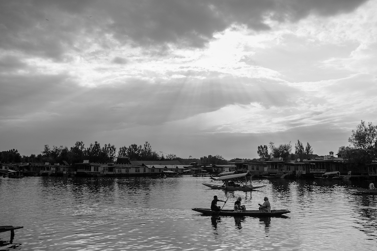
Heaven on Earth - Kashmir, 2015
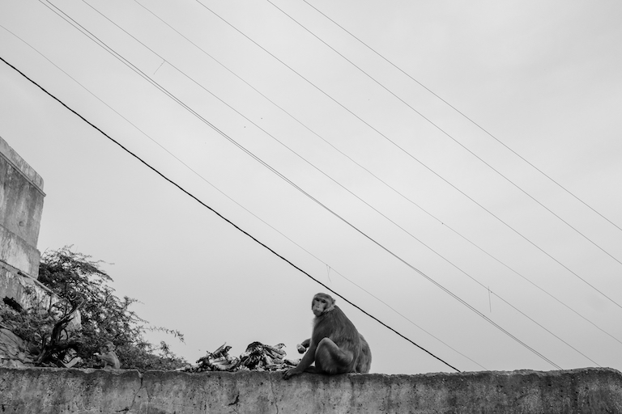
Banana Feast - Jaipur, India, 2015
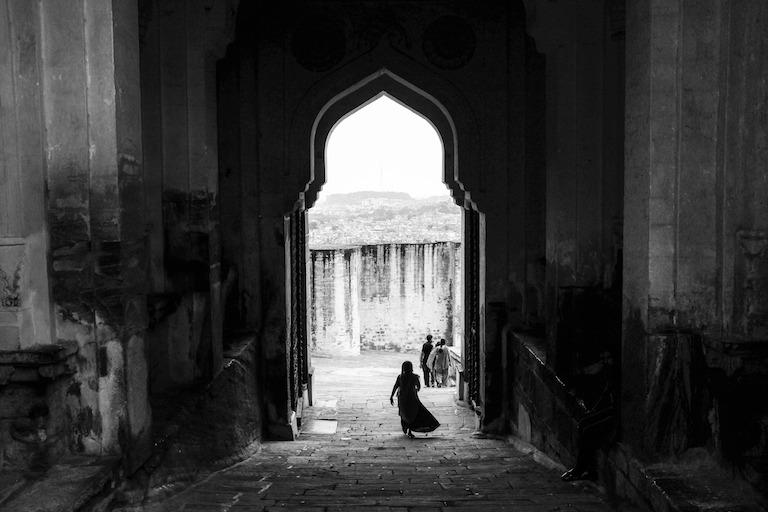
The Gate - Jodhpur, India, 2015
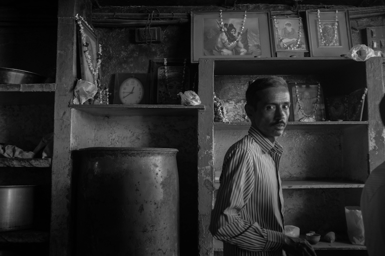
Chai House - Varanasi, India, 2015
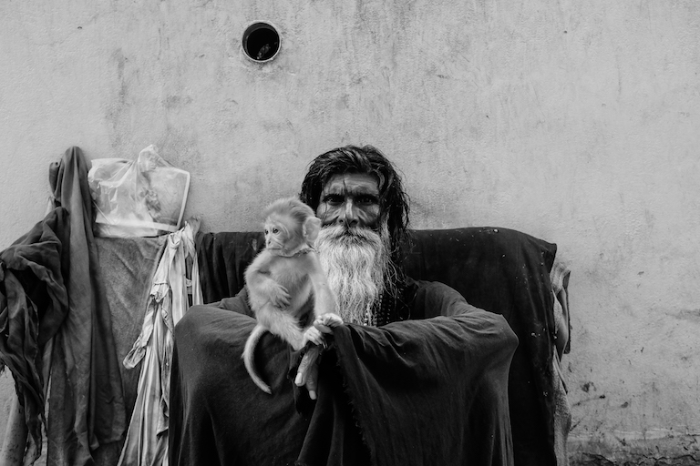
Piercing Gaze - Varanasi, India, 2015
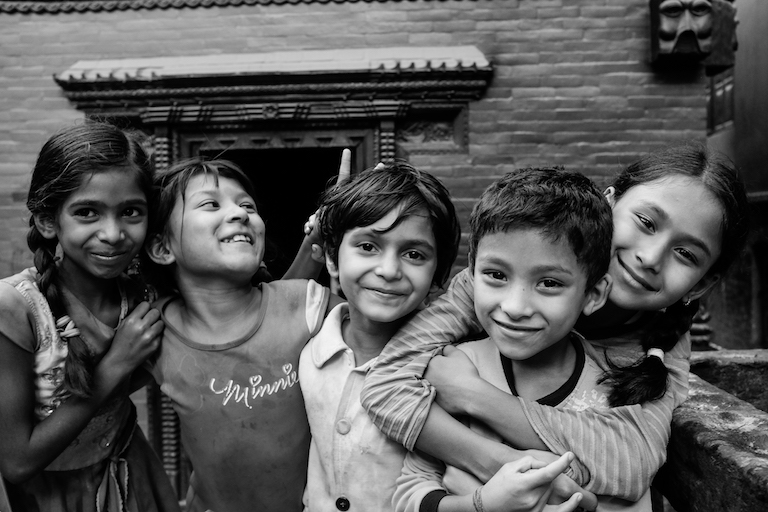
Friendship - Kathmandu, Nepal, 2015

Around The Fire - Kalamaki, Greece, 2015